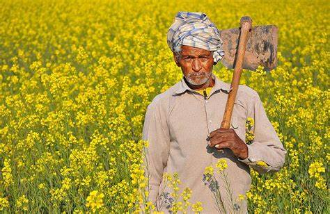

Farmers, the gold🪙 of India

The Indian farmeris a living idol of India, as they are the most hardworking farmers around the world & always busy, working hard for their crops, during day and night.
India is called the land of farmers, as most of the people of the country are directly or indirectly involved in the agriculture sector.A farmer is one of the most important members of society. He is the giver of food to the people, for practical purposes. A farmer is someone who owns and operates a farm. Some farmers grow a range of crops, while others produce dairy cows and sell their milk. Farmers labour in agriculture in some capacity, such as growing vegetables, grains, or fruit, or raising animals for milk, eggs, or meat.
It would not be wrong to say that 'Indian farmers' are the backbone of the economy and the farmers are indeed the beloved children of Mother India.
Farming is the process of growing a wide variety of crops; India has a diverse culture, with approximately 22 major languages and 720 homeland languages spoken in India.
The Indian farmer is a living idol of India, as they are the most hardworking farmers around the world & always busy, working hard for their crops, during day and night.
Farmer's Importance
- Farming is a remarkable part of the economy in India, as it adds about 17% of the absolute GDP. It gives employment to over 60% of the population.
- Farmers are an important part of the existence of our various societies because they provide food and fibre which gives us nutrition and cloth.
- Farming is an industry that relies on the natural environment and its careful and responsible use every day.
- Cultivation practices often provide natural biologically active filter mechanisms for water as well as soil vegetation stabilization.
- Indian Farmer and farming communities provide an excellent environment to raise relations.
- They offer opportunities for young and old alike to gain experiences in basic lifelong values, an appreciation for success, as well as the sorrow of life's most challenging occurrences.